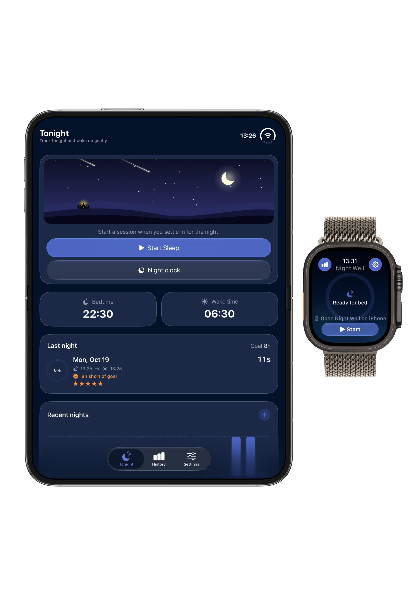
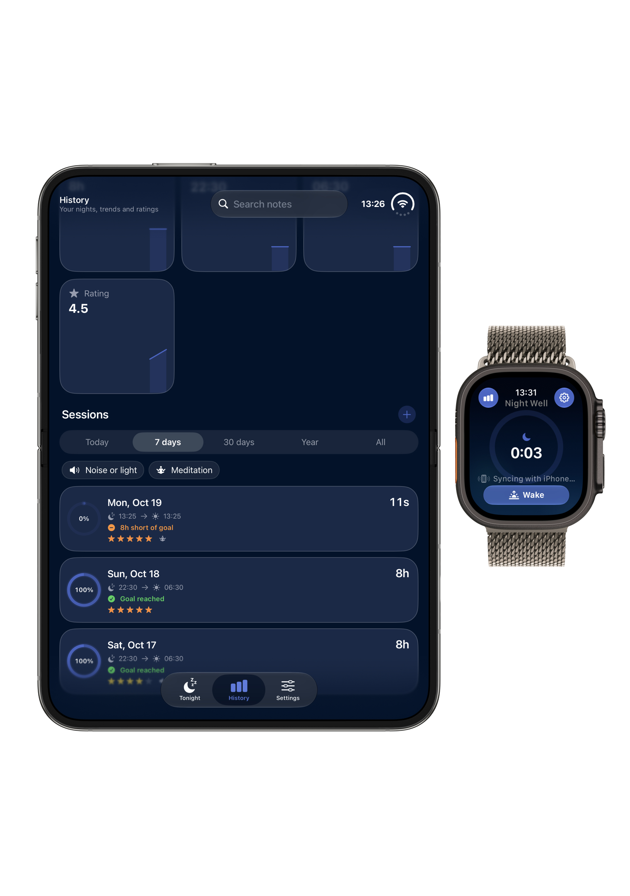
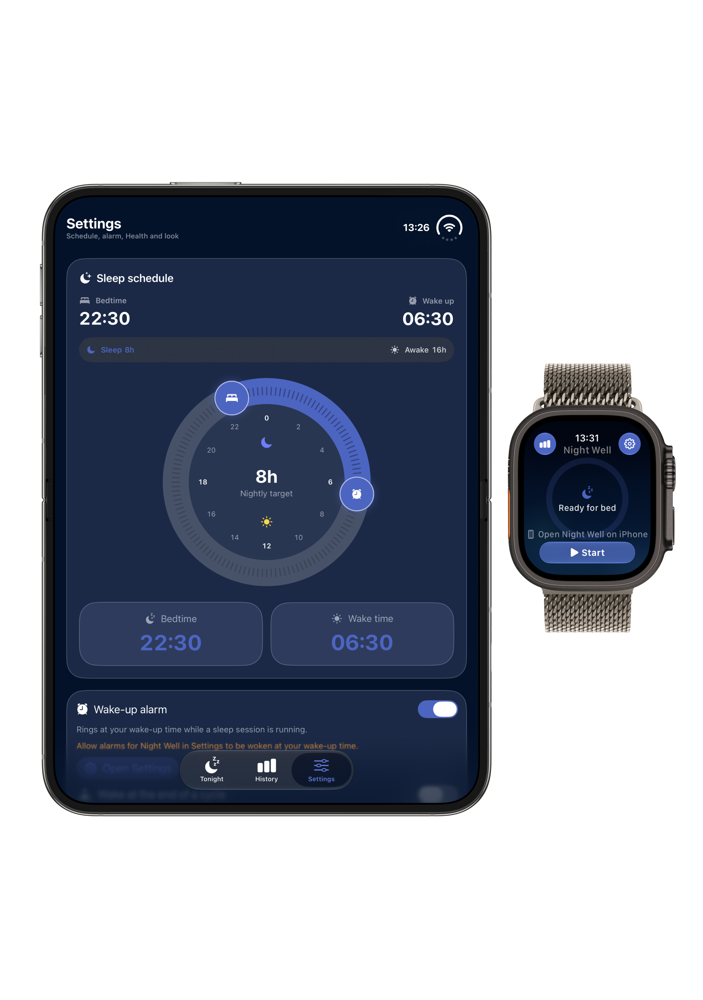
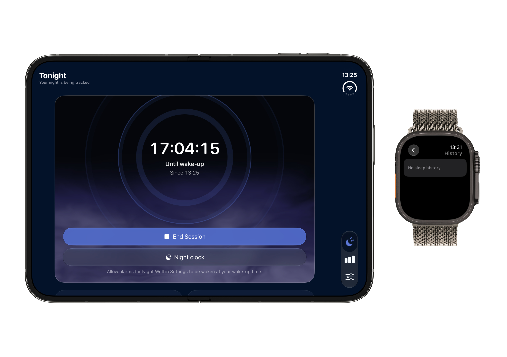
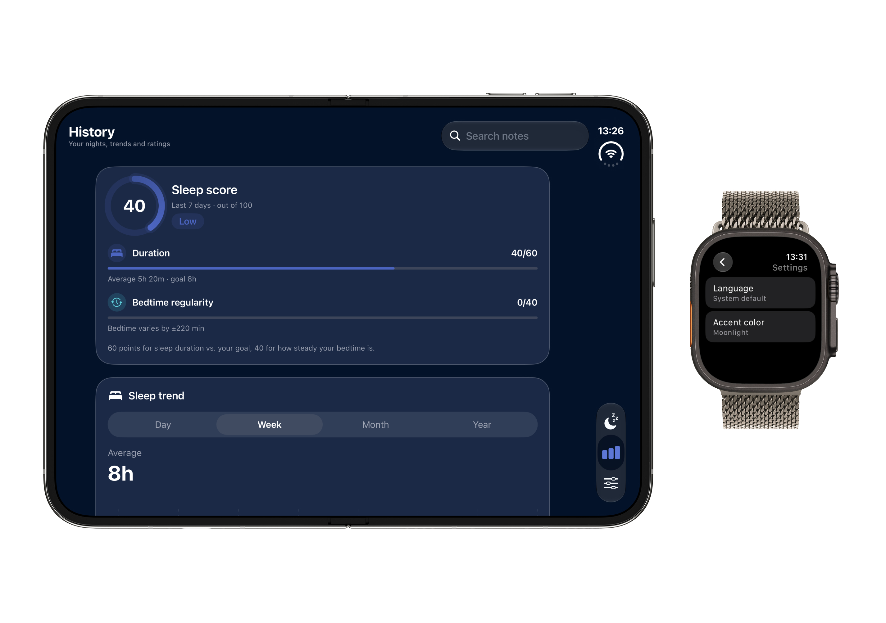
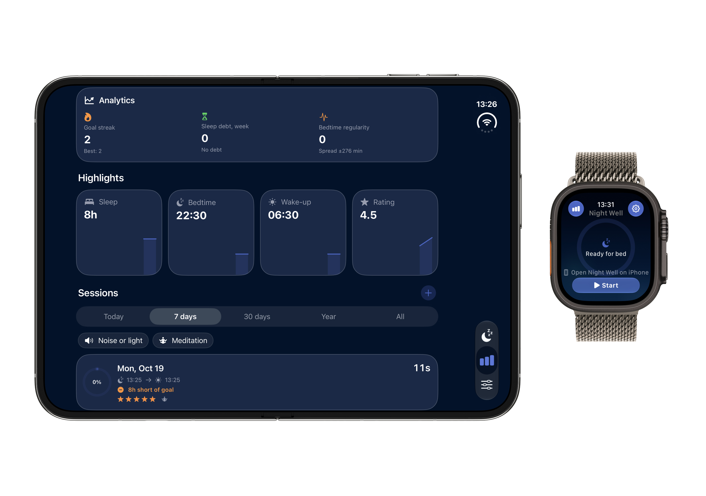

Designed for restorative nighttime wellness and mindful sleep habits.
Nightwell is a native iOS application engineered around deep sleep tracking, generative ambient soundscapes, and circadian rhythm synchronization. Built from the ground up with SwiftUI, Clean Architecture, and Swift Concurrency, it demonstrates high-level mastery of Apple system frameworks: HealthKit, ActivityKit, SwiftData, and watchOS pairing.
Need help with Nightwell?
For technical support, inquiries, feature suggestions, or issue reports, feel free to reach out directly to the developer. All inquiries are handled with care.
Your personal data stays on your device.
Nightwell is engineered on a strict zero-knowledge philosophy. We believe your sleep metrics, health habits, and biometric signals belong solely to you.
• No Data Harvesting: We do not collect, transmit, or sell any personal information or usage telemetry.
• HealthKit Integration: Health data is read and written directly to your local Apple Health storage and never leaves your iPhone.
• Purchases: Subscriptions are processed directly by Apple StoreKit 2 with zero third-party intermediaries.







